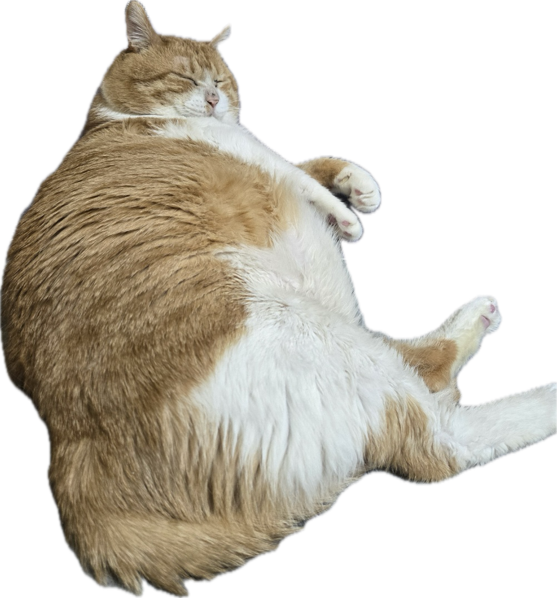

정민의 소개페이지
소개
취미
추천 콘텐츠
좋아하는 사이트
연락처
소개
이름 : 박정민
나이 : 24세 (만 22세)
전공 : 글로벌시스템융합과

취미
고양이 사진 찍기
고양이 영상 촬영
고양이 영상 감상
추천 콘텐츠
고양이 노는 모습
고양이 울음소리
추천 유튜브 채널
유튜브 체널 제목
링크
야옹이채널
야옹이채널
고양이 뉴스
고양이 뉴스
고양이 산책
고양이 산책